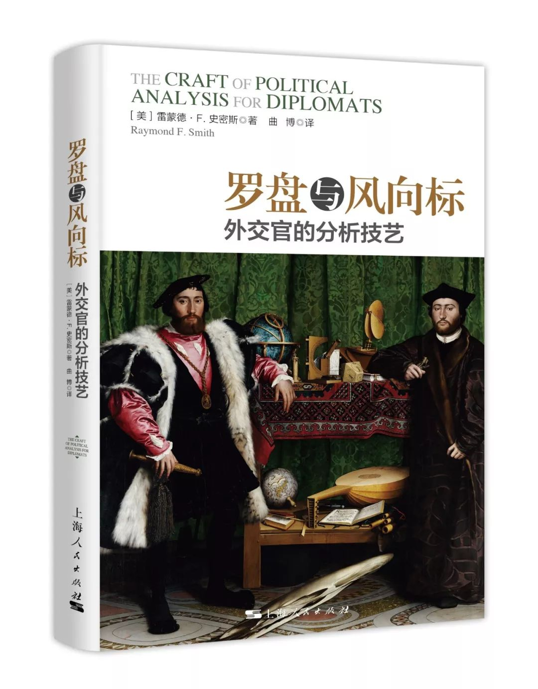

收录于合集
****
雷 蒙德·F·史密斯
在美国国务院工作数十年的资深外交官，主要从事政治分析工作，退休前为公使衔参赞。他曾担任过两个最为重要的政策分析工作：美国驻莫斯科使馆的公使衔参赞和情报与研究局的俄罗斯、中亚、高加索和东欧事务办公室主任。他是《与苏联人谈判》一书的作者（ Negotiating with the Soviets , Indiana University Press, 1989），现居于达拉斯。
曲博（译者）
外交学院国际关系研究所所长、副教授，先后就读于南开大学、北京大学，获北京大学国际关系博士学位，曾在牛津大学、普林斯顿大学做博士后研究工作，主要研究领域为国际政治经济学、全球经济治理、国际关系理论、研究设计与方法等。主要著作有：《危机下的抉择：国内政治与汇率制度的选择》《利益、制度与信息：国内政治与国际关系》（译著）等。

中文书名：罗盘与风向标——外交官的分析技艺
原书名：The Craft of Political Analysis for Diplomats
分类：世界政治
作者：雷蒙德·F. 史密斯
作者原名：Raymond F. Smith
译者：曲博
定价：58.00元
出版时间：2018年4月
出版社：上海人民出版社
装帧：平装
编辑推荐
-
本书是服务中国外交建设大局的引进著作， 国内首部 剖析外交官工作的外文译著。
-
对于职业外交官而言 ，这是一本教你如何更好的处理外交工作、书写调研报告（尤其是进行政治分析）的指南。
-
对于普通读者而言， 这是一个公众了解外交工作和外交官职业的窗口（外交官的工作致力于维护国家利益，让世界变得更好，但他们的工作在很多时候不被人理解又常常被人忽视）。
-
本书中的 参考案例珍贵 ，四份美国驻莫斯科使馆发回的电报均为作者通过美国国务院正式程序解密， 从外交官政治汇报的视角看苏联解体前夜的情形 。
内容简介
外交官能否以及如何对本国政策产生影响？如果外交官的个人观点与本国政府的政策不一致，他应当如何做？在本书中，作者雷蒙德·史密斯结合自身的经历，将外交官的政治分析称为技艺，认为政治分析既需要敏锐的观察和科学的分析，又需要外交官自身的直觉和判断。外交官的工作致力于维护本国利益，同时他们的工作也需要有预见性，如何解释事件的发展、向本国政府进行汇报并提出政策建议，是职业外交官应该具备的能力。作者在本书中，结合自己的工作实践，讨论了上述问题并探讨了政治分析的本质，同时结合具体政治分析报告提出了写好调研报告的建议。
美国职业外交官通常包括五类：政治、商务、管理、领事和公共外交。根据分工，政治类外交官的主要职责是与驻在国政府机构打交道，并向本国政府报告驻在国的政治情势等。如何了解与分析驻在国的政治情势，并向本国政府汇报既是科学，又是艺术。作者在美国国务院工作25年，主要从事政治分析工作，曾担任美国驻苏联公使衔参赞。本书是作者工作经验的总结，也是对各国同仁具有指导意义的手册。其中，四份美国驻莫斯科使馆发回的电报，具有史料研究价值，作者通过国务院正式程序解密，从外交官政策汇报的视角分析了苏联解体前夜的情形。这些案例具有一定的研究价值。
媒体|学者推荐
这本书对外交工作做了坦诚和具有洞见的介绍，解释了如何运用自己的罗盘穿越政治的和官僚的风浪。史密斯揭示了那些制约优秀调研分析影响的障碍、偏见和规则，阐明了外交官所具备的独特的文化和关系性工具。作者用丰富的案例和引用展示了自己的观点，包括自己在苏联和非洲工作的亲身经历。这本书为作者的外交前辈以及向往外交工作的后来者设定了分析任务的标准。
——切斯特·克罗克（Chester Crocker）
美国非洲事务前助理国务卿，乔治城大学沃尔什外交学院战略研究教授
对那些有抱负的外交官，对那些想了解当今外交官作用和所需技艺的读者，对那些想透过维基解密理解外交调研报告写作和目的的读者，这都是一本值得阅读的著作。
——罗纳德·E. 纽曼（Ronald E. Neumann）
美国外交学院院长，美国驻阿尔及利亚、巴林和阿富汗前大使，《另一场战争：在阿富汗的胜利和失败》一书作者
这本书观点精炼，写作流畅，总结了历史上和面向21世纪的外交能力要求，包括了大量的信息和洞见。对那些已经是或者想成为外交官的读者，对那些研究外交的学者，这本书都是必读书。尤其是有益于那些对政治分析有兴趣的读者。
——卡罗尔·兰彻斯特（Carol Lancaster）
乔治城大学沃尔什外交学院院长
目录
译者序
致谢
美国国务院常用术语缩略表
第一章 政治分析及其技艺本质
第二章 外交政治分析的目标
第三章 读者
第四章 竞争
第五章 分析者的个人工具箱
第六章 分析工具
第七章 优秀报告的标准：美国国务院的观点
第八章 案例一苏联解体：驻莫斯科使馆初期的观点
第九章 案例二苏联解体：反对戈尔巴乔夫的政变
第十章 罗盘与风向标
第十一章 技术变革、边缘化的风险和未来的需要
推荐阅读书单
附录1 美国国务院组织结构表
附录2 美国国务院雇员类别
附录3 苏联的解体与俄罗斯的十月事件
附录4 犹太人定居点问题